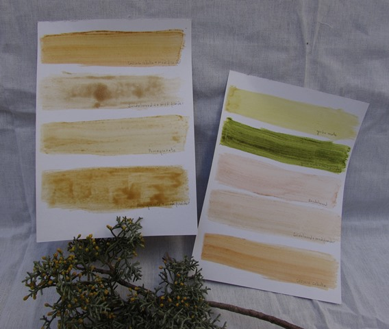

Foraging for pigments
Mi forma de crear presenta una primera instancia donde extraigo pigmentos, tintes, arcillas, entre otros para ser tratados en mi taller. Cada material tiene un proceso especial que va a depender también del soporte y que por lo general suelen ser procesos largos que llevan varias semanas.

